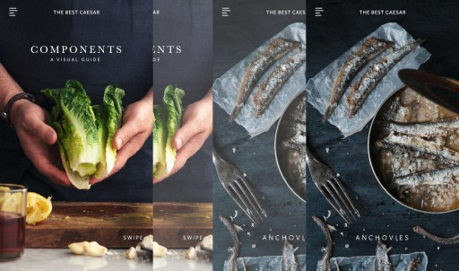
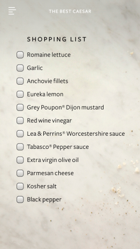

-
Default system fonts on mobile platforms
Tinytype is a great resource, charting all the system fonts available on major mobile platforms.
-
I’ve been subscribing to Tonx for my coffee for two months. Every two weeks I get a new bag of freshly roasted coffee. But Michael, you live in Portland, the land of coffee. Why would you order coffee from the Internet? It’s just that much better. Also it’s one less thing I have to think […]
-
Oh, so there’s a “devicemotion” event
A clever fix for the orientation change scaling bug in mobile Safari.
Recently the The Talk Show had a new app as a sponsor. The Best Caesar™ is a one-shot simple iOS app with a single purpose; the app describes how to make a caesar salad.
It does this with quite beautiful photography by Katie Newburn and glib writing by Tyson Caly.
The recipe
From the promotional web site:
Forget what you know about the caesar salad. The Best Caesar™ isn’t your ordinary, gloppy, egg-based version. No, this is something different.
It’s true, this recipe is something different — a recipe for a mustard vinaigrette. Not a caesar dressing. Have you ever heard someone say “I like martinis, but I don’t like gin”? If you have, then you know two things about this person immediately. One, they don’t like martinis, and two, they don’t know what a martini is. Likewise there are many variations on the French classic coq au vin – but they all have the critical constituent ingredients of chicken and wine and the common technique of browning chicken and braising in wine. Take away one of these components and you no longer have coq au vin.
This recipe may make a wonderful dressing. It may be more delicious than any traditional caesar salad. But without egg, it’s not a caesar dressing.
The app
The app has, really, lovely photography. It’s the best part by far. The copy reads like an advertisement for Lea & Perrins® The Original Worcestershire sauce.

Swipe to navigate
The app opens with a simple menu screen that opens to a simple swipe-able slide-show or e-booklet. A pamphlet in app form. The iPhone version only works in portrait mode. The iPad version forces a landscape layout. At the time of this writing the iPad version fails to work if launched in portrait mode. All that appears is a brief “loading” message, a white screen, and then silence.
All app content appears to be images. It’s impossible to select text for copy and paste. The app includes a pointless shopping list with clickable checkboxes – but since you can’t copy text, this shopping list, for one dish, is trapped within the app forever.

The loneliest checklist
Why is this an app?
The Best Caesar™ would make a great single-serving web page. Web pages have these great features, like copyable text and can even be printed out by your parents.
Apps have the benefit of being easily available without an internet connection. Web sites can do this too, of course, but it’s not a commonly known feature. Also, most users of smart phones think in terms of “apps” and web sites. So if you want to reach a mobile-device using audience, an app does make sense. But this app is free. And it’s trivial to search the internet for a caesar salad recipe. So why does this exist?
It’s an ad.
The recipe heavily insists on specific, brand name products. The iPad version admonishes readers to use Grey Poupon® Dijon mustard, because no other mustard will do. I doubt Caesar Cardini used Grey Poupon®. This, along with the Tobasco and Lea & Perrins brand worship made me wonder if the app wasn’t viral marketing for a giant conglomerate that owned all three brands. I think, though, it’s more likely that it’s one of two things.
- An ad for Tyson Caly’s development company – to show off their app skills
- An ad for App Press – mentioned twice on the promotional web site – a tool for making magazine-style app “publications”
Since this ad was advertised itself on the Talk Show, and that’s probably not cheap, I suspect that App Press has reached out to some designers to create apps to create buzz around their product.
App Press looks sort of interesting. It’s a hosted platform for creating publications in “app” form. Just the sort of thing marketing companies would want to churn out marketing in app form.
Although I think it’s a bit unfortunate, I think we are seeing a move away from the web as a distribution medium for content. Apps offer publishers a lot of control and convenient means for charging for content. Those things are possible on the web, but not easy. Also, people expect the web to be free. It sort of makes me wonder if we won’t start seeing the app equivalent of blogs soon. Web sites might only exist for shopping, porn, and advertising apps.